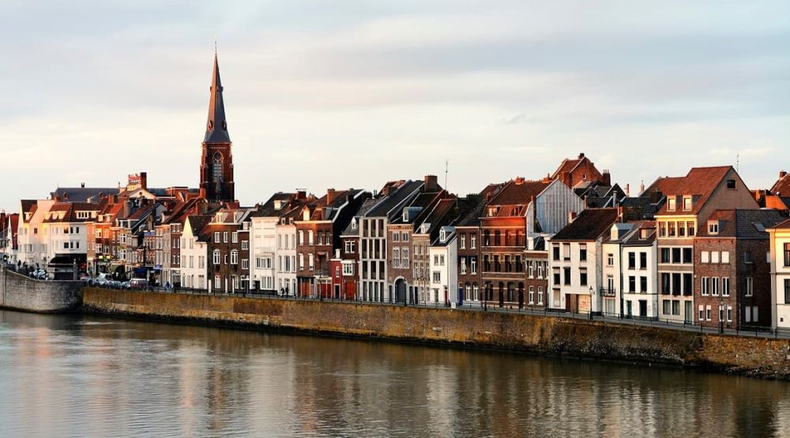

Descoperă Maastricht - Orașul istoric și vibrant din sudul Țărilor de Jos
Maastricht este un oraș fermecător din sudul Țărilor de Jos, bogat în istorie și cultură:
-

Centrul vechi pitoresc
Străduțe înguste, piețe medievale și arhitectură frumoasă te invită să explorezi istoria orașului.
-

Patrimoniul religios
Orașul găzduiește numeroase biserici vechi și catedrale, cum ar fi Biserica Sfântul Servaas.
-

Shopping și gastronomie
Străzile comerciale vibrante și restaurantele tradiționale completează experiența în oraș.
-

Peșteri subterane
În apropiere se află sisteme de peșteri impresionante, cum ar fi peșterile de la Maastricht.
-

Evenimente culturale
Maastricht găzduiește festivaluri, expoziții și evenimente culturale pe tot parcursul anului.
Concluzii
Maastricht îmbină armonios trecutul istoric cu atmosfera modernă, oferind o experiență captivantă pentru vizitatori.